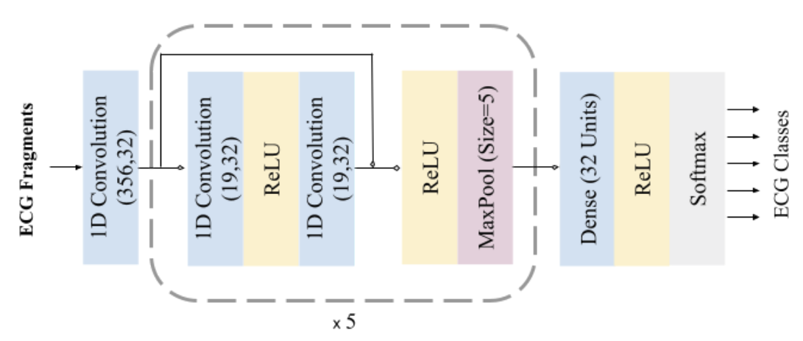

We have developed an modular, lightweight and automated system capable of detecting heart diseases in real-time utilising electrocardiogram signals and deep neural networks.
Dataset
In this study, the publicly available PhysioNet MIT-BIH ECG Arrhythmia Database was used. The database contains 48 half-hour excerpts of ambulatory ECG recordings, obtained from 47 subjects. Twenty-three recordings were chosen at random from a set of 4000 24-hour ambulatory ECG recordings collected from a mixed population of inpatients The remaining 25 recordings were selected from the same set to include less common but clinically significant arrhythmias that would not be well-represented in a small random sample. The recordings were digitized at 360 samples per second. Two or more cardiologists independently annotated each record, resulting in reference annotations for each beat; with approximately 110,000 annotations in the entire database. The annotations are divided into 5 categories as per guidelines of the Association for the Advancement of Medical Instrumentation (AAMI) EC57 standard in 1998. In each recording, the first channel is the modified-lead II (MLII), and the second is fixed as one of V1, V2, V4, and V5 depending on the recording. Since MLII is available in all recordings and considering the fact it has been shown that the use of this lead would be sufficient to achieve high accuracy, we therefore, adopted MLII data in this study. In order to make the processing feasible with limited computational resources (e.g., edge computing), the long recordings were fragmented into time windows of 1s, thus each containing a fixed length of 360 data points. Based on the cardiologist annotations assigned to the original ECG, each time window was labeled as follows: if the entire segment was annotated as one class, the time window was assigned to that class; if there was a change in the expert annotation within the 1s time-window, then the predominant class was assumed as the label for the entire segment.
Network Architecture
A 1D convolutional neural network was trained for the task of arrhythmia classification. Convolution layers have 32 kernels of size 5, employs connections in a similar manner to Residual Connections. Each convolution layer is followed by 5 residual blocks composed of 2 convolution layers, 2 ReLU (Rectified Linear Unit) activations, and a max-pooling of stride 2 and size 5 in all pooling layers, the operation that extracts the maximum value output within the specified size-shifting along the direction of the time-series. Followed by one fully connected (FC) layer containing 32 neurons. The fully connected layer is interconnected to all units in the forward layer. To predict the output class probabilities, a softmax layer is applied to output structural-state identification results. The probabilities of all predictive prospects are measured, thus the final result represents the one with the highest possibility.

Implementation
Given that the dataset is fairly imbalanced with unequal distribution of different arrhythmia classes. To prevent potential biases towards more dominant classes, the approach of random over-sampling examples (ROSE) was adopted, which augments the data after removing the baseline. This resulted in a balanced dataset, with 76,607 samples for each arrhythmia class. The dataset was then randomly split into training (287,276 samples) and validation (95,759 samples), with testing samples selective split prior to over-sampling (3500 samples). The network was implemented using the Tensorflow library. The loss function used was cross-entropy on the softmax predicted outputs. Adam optimizer was applied with decaying learning rates reducing at a factor of 0.75 for every ten thousand iterations. Training the entire network takes less than 15 minutes with a mini-batch size of 256 samples over 100 epochs using an Nvidia Tesla P100 processor. The validation dataset was used for early stopping to avoid redundant training and overfitting, with patience of 10 epochs. The model was trained until the validation loss plateaued.
Edge and wearable devices have relatively much smaller, low-power, and slower processors, compared to desktop processors. Therefore, for the continuous execution of the arrhythmia classifier on such devices with limited memory and computational power and in order to meet the timing requirements, further optimization of the model was applied to reduce its size (smaller storage size and less memory usage) and latency, while maintaining (or with little degradation in) the model accuracy. To this end, post-training full integer quantization was adopted and applied to the CNN model developed using Tensorflow Lite deep learning library. The full integer (8-bit) quantization technique, approximates floating-point values in the trained model, layer by layer. Per-channel weights are represented by int8 two’s complement values in the range [-127, 127] with zero-point equal to 0. Per-tensor activations/inputs are represented by int8 two’s complement values in the range [-128, 127], with a zero point in the same range. In thisprocess, only floating-point weights are quantized to 8-bit integer precision in a bit-by-bit operation, in an iterative process until the network is fully mapped. As a proof of concept, two hardware platforms were used as examples of edge low-powered processors for running the quantized neural network: ARM Cortex A53 and ARM Cortex A55.
Evaluation metrics
The classification was evaluated using the standard measures: classification accuracy (Acc), sensitivity (Sen), specificity (Spe), 𝐹 1 score, and confusion matrix. Besides accuracy, execution time (computational intensity) and power consumption of the arrhythmia classifier were also measured as the other two important factors, particularly for the application of continuous monitoring on wearable devices.The inference time was measured by recording the average time in milliseconds for all predictions made on the test dataset. In order to be able to measure the battery usage by the smartphone application, the fully charged phone was left idle in flight mode for 12 hours, and the dropped battery percentage was recorded at the end of this period. The battery was then fully charged again, and the application was kept continuously running for the same period of time, and the battery percentage was recorded. The difference in the two percentages was assumed to be the quicker battery drainage due to the application. The energy E (Wh) in Watt-hours was then estimated. Additionally, the energy consumption E per prediction (i.e., classifying each ECG segment) was estimated in Joules.
Results
The prediction results for the arrhythmia classifier (non-quantized) when applied to the test dataset. It shows that the model was able to correlate the characteristics with the correspondent arrhythmia. The model detected all of the anomalous segments for Ventricular Ectopic Beat (V class) reliably. Only for one anomaly, Fusion of Ventricular and Normal (F class), the detection was relatively less reliable with a sensitivity of 99.70%, probably because of the F class being the least represented class in the dataset (0.5% of the dataset). Overall, 99.88% of anomalous segments in the test set were detected. Of the normal heartbeats, 0.25% were falsely indicated as being anomalous.
The quantized classifier showed a small degradation in performance as shown in Table 3; a minute drop in accuracy (≤0.3%) across all class types; sensitivity and specificity were above 99.1% and 99.3% for all anomaly types, respectively. the quantized model however achieved significant improvements in inference (prediction) time, with a reduced inference time per classification of 12.13±0.61 (11.99, 31.14) and 7.69±0.58 (7.00, 24.00) and 4.76±0.04 (4.70, 12.17) milliseconds on the GPU, smartphone, and Raspberry Pi processors, respectively. The reduction in the model size was also noticeable; the size of the quantized model was 93 kB, compared to 853 kB for the original model.
The battery usage for the arrhythmia classification application using the quantized classifier was 2.04Wh for 12 hours of continuous running. Considering only the nominal power rating of 0.765W for the smartphone CPU used in this study and the average inference time of 7.65ms, the energy consumption per prediction was 5.85mJ. The energy consumption for the Raspberry Pi CPU with a nominal power rating of 0.9W and average inference time of 4.76ms was 4.28mJ, compared with 178.88mJ for the non-quantized classifier with an average inference time of 198.75ms.